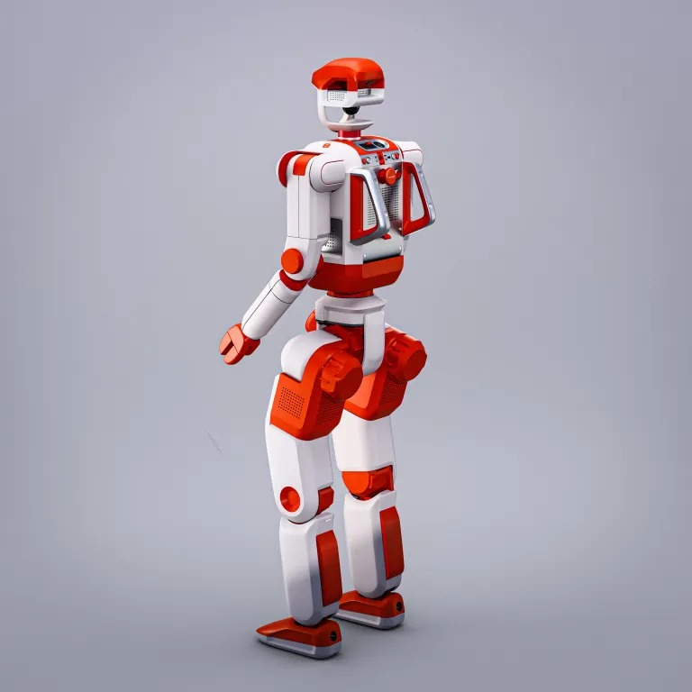
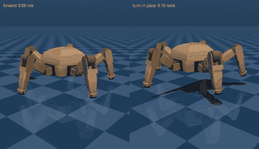
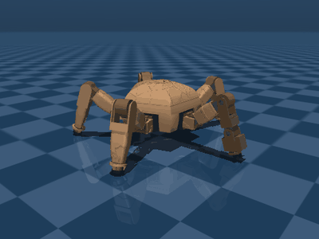

Projects & methods
Research in detail.
Long-horizon manipulation, post-training, and learning to act in the physical world.
Mechatronics Engineering + AI at the University of Waterloo, working on foundational models and robot learning for manipulation. Currently a Founding Research Engineer at Preload (YC F26) and an accelerated MASc researcher in robotics at Waterloo under Stephen L. Smith; previously a Research Engineer at AXIBO under Vidyasagar Rajendran.
← Selected workResearch & engineering
Research proposals, deployed manipulation systems, and independent engineering projects. Status and scope are noted with each project.
1 Bimanual Dexterous Origami: the IROS 2026 Robotic Origami Challenge
Proposal
Read Origami-MoH →
For the IROS 2026 Robotic Origami Challenge, I'm developing autonomous paper folding on a 65-DoF bimanual dexterous platform with rich tactile sensing. The approach makes a π0.5 flow policy reactive (multi-horizon action prediction with disagreement-based replanning) and contact-aware (progressive tactile fusion, escalating from proprioceptive concatenation to a force-aware mixture-of-experts action decoder), trained as a single vision-conditioned policy over a fixed six-fold sequence.
To tackle the long-horizon problem, I segment demonstrations over their temporal shape into contact-delimited subgoals, then train the model to predict the next subgoal state from proprioception and tactile alone (no vision). This decomposes the minutes-long fold into short, individually verifiable steps and gives the policy intermediate targets that stay reliable exactly when the crease self-occludes the camera.
2 A Deployed Bimanual Manipulation Policy Stack: Junior
Role
End-to-end ownership: demo-collection hardware → policy training → closed-loop deployment on Junior's dual arms.

A single fixed action-chunk horizon trades foresight for precision, yet bimanual tasks need both. Camera, inference, and control delays misalign predicted actions with physical execution, and per-chunk inference alone caps effective control frequency on contact-rich tasks. Junior's deployed stack composes four ideas so each addresses a different failure mode: a π0.5 flow-matching backbone, a Mixture of Horizons action head with a learnable gate, inference-time latency matching adapted from UMI, and action interpolation between predicted chunks drawn from the 2025 BEHAVIOR Challenge-winning solution.
Mixture of Horizons resolves the foresight / precision trade-off of a single fixed horizon; latency matching keeps predicted actions temporally aligned with execution; and action interpolation raises the effective control frequency between chunk predictions without extra inference calls. The components compound rather than compete, yielding improved throughput, accuracy, and precision over a single-horizon, latency-naive baseline.
3 Noise-Space RL Fine-Tuning of Flow-Matching Policies
Basis
DSRL: Steering Your Diffusion Policy with Latent Space Reinforcement Learning, Wagenmaker et al., CoRL 2025.
Fine-tuning a diffusion or flow policy's weights with RL is unstable and demands full access to model internals, while behavior-cloned policies plateau without costly additional demonstrations. DSRL sidesteps both: instead of updating weights, it trains a small RL agent to select the noise seed that initializes denoising, steering a frozen, black-box base policy toward better behavior.
I applied DSRL-style noise-space RL to our deployed VLA policy's action head, training a lightweight SAC agent (~500K parameters) to pick the seed that steers the frozen base policy. Because RL runs over the latent-noise space, never through the denoiser, so no gradients touch the base weights and no model internals are required. This post-training contributed to a 30% manipulation-performance gain over imitation baselines, adapting a frozen policy without modifying its weights or collecting extra demonstrations.
4 Latent World-Action Models (VLA-JEPA)
Basis
VLA-JEPA: Enhancing Vision-Language-Action Models with a Latent World Model, Sun et al., 2026.
Standard VLA policies map observations directly to actions without modeling how the scene will evolve, and pixel-space prediction is brittle to appearance and camera changes. Following VLA-JEPA, I built action-conditioned latent world-action models that predict future latent states rather than pixels, a leakage-free formulation in which future frames are only ever targets, never inputs.
The model encodes the current observation plus action context into a latent representation and predicts 10-step, action-conditioned latent dynamics with no pixel reconstruction. A two-stage recipe (JEPA-style pretraining followed by action-head fine-tuning) integrates the predicted latent rollouts with downstream VLA action heads. I evaluated rollout consistency across manipulation trajectories to assess temporal coherence of the learned dynamics.
5 Rocky: a five-legged walking robot
Build
Code on GitHub →
Rocky is a pentapod I designed and trained end to end: a 250 mm pentagonal body carrying five identical 342 mm limbs at 72° spacing, one of which doubles as a manipulator. The repo takes it from a Fusion 360 CAD master to a simulation model (MJCF / URDF), an analytic wave gait, and a PPO locomotion policy in MuJoCo (mjlab). Sixteen Feetech STS3215 joints, 4.17 kg all-up.


Open loop, the wave gait reaches only ~78% of commanded speed; the shortfall is servo deflection, not the gait, which is the clearest argument in the repo for closing the loop. The RL task carries the gait over with a gait-phase clock in the observation, a contact-schedule reward, and an imitation reward that constrains foot placement. That third term was decisive: contact scheduling alone constrains when a foot is down but never where it lands, so the policy learned to step in place; adding the imitation term fixed it in one run.